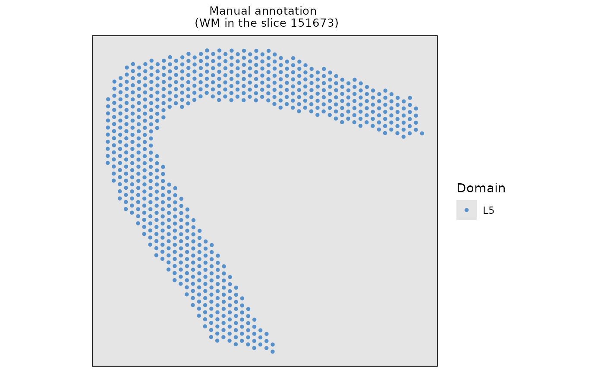
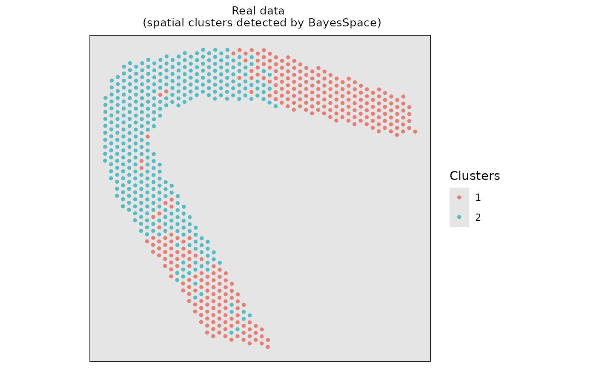

Perform ClusterDE on a single-domain spatial dataset
Siqi Chen
Computer Science, Central South Universitysiqichen4477@gmail.com
Dongyuan Song
Department of Genetics & Genome Sciences, UConn Healthdongyuansong@ucla.edu
11 December 2025
Source:vignettes/ClusterDE-onedomain.Rmd
ClusterDE-onedomain.RmdDownload data
We selected white matter (WM) of 151673 slice from the LIBD Human Dorsolateral Prefrontal Cortex (DLPFC) dataset, which is downloaded in the spatialLIBD R package.
# # Download the spot-level data
# spe <- spatialLIBD::fetch_data(type = "spe")
#
# # Select the white matter layer in the slice 151673
# sub_151673 <- spe[, spe$sample_id == "151673"]
# index <- sub_151673$spatialLIBD == "WM"
# index[which(is.na(index))] <- "NAN"
# sub_151673 <- sub_151673[, index == "TRUE"]
# print(sub_151673)
#
# # Delete the genes that express rate less than 20%
# data <- sub_151673@assays@data$counts
# zero_expre_rate <- apply(data, 1, function(x) {
# zero_true <- x == 0
# zero_num <- length(which(zero_true == TRUE)) / dim(data)[2]
# return(zero_num)
# })
# zero_expre_gene_idx <- which(zero_expre_rate < 0.8)
# print(paste0("the number of gene with zero expression rate: ", sum(zero_expre_rate == 1), sep = ""))
# sub_151673 <- sub_151673[zero_expre_gene_idx,]
# print(paste0("the size of data: ", dim(sub_151673)[1], "*", dim(sub_151673)[2], sep = ""))
#
# # Construct the SingleCellExperiment object
# real_sce <- SingleCellExperiment::SingleCellExperiment(list(counts = sub_151673@assays@data$counts))
# # Add colData information of singlecellexperiment
# real_sce$spatial1 <- sub_151673@int_colData@listData$spatialCoords[, 2]
# real_sce$spatial2 <- sub_151673@int_colData@listData$spatialCoords[, 1]
# real_sce$cell_type <- sub_151673@colData$spatialLIBD
# SingleCellExperiment::logcounts(real_sce) <- log1p(SingleCellExperiment::counts(real_sce))
# dlpfc_onedomain <- Seurat::as.Seurat(real_sce)
data(dlpfc_onedomain, package = "ClusterDE")Visualize the real data on spatial mapping.
# Visualize the real spatial domains
domains <- data.frame(Xaxis = dlpfc_onedomain$spatial1, Yaxis = dlpfc_onedomain$spatial2, Domain = dlpfc_onedomain$cell_type)
#> Loading required package: SeuratObject
#> Loading required package: sp
#>
#> Attaching package: 'SeuratObject'
#> The following objects are masked from 'package:base':
#>
#> intersect, t
ggplot2::ggplot(domains, ggplot2::aes(x = Xaxis, y = Yaxis, col = Domain)) +
ggplot2::geom_point(size = 1.0) +
ggplot2::ggtitle("Manual annotation \n (WM in the slice 151673)") +
ggplot2::coord_equal() +
ggplot2::theme(
plot.title = ggplot2::element_text(size = 10, hjust = 0.5),
panel.grid = ggplot2::element_blank(),
panel.background = ggplot2::element_rect(fill = "gray90"),
panel.border = ggplot2::element_rect(color = "black", fill = NA, size = 0.6),
axis.title.x = ggplot2::element_blank(),
axis.title.y = ggplot2::element_blank(),
axis.ticks.x = ggplot2::element_blank(),
axis.ticks.y = ggplot2::element_blank(),
axis.text.x = ggplot2::element_blank(),
axis.text.y = ggplot2::element_blank()
) +
ggplot2::scale_color_manual(values = "#5791cc")
#> Warning: The `size` argument of `element_rect()` is deprecated as of ggplot2 3.4.0.
#> ℹ Please use the `linewidth` argument instead.
#> This warning is displayed once every 8 hours.
#> Call `lifecycle::last_lifecycle_warnings()` to see where this warning was
#> generated.
Run the BayesSpace + Seurat pipeline
Firstly, we employed the BayesSpace for spatial clustering. Please note that ClusterDE is designed for 1 vs 1 comparison; therefore, we obtain two spatial clusters for illustration purpose.
# Construct the input of BayesSpace based on real dataset
# The input of BayesSpace is sce object
dlpfc_cluster <- SingleCellExperiment::SingleCellExperiment(
list(counts = Seurat::GetAssayData(dlpfc_onedomain, layer = "counts"))
)
#> Warning: replacing previous import 'S4Arrays::makeNindexFromArrayViewport' by
#> 'DelayedArray::makeNindexFromArrayViewport' when loading 'SummarizedExperiment'
# Add colData information of SingleCellExperiment
dlpfc_cluster$row <- dlpfc_onedomain@meta.data$spatial1
dlpfc_cluster$col <- dlpfc_onedomain@meta.data$spatial2
# Log-normalize the count data
set.seed(123)
dlpfc_cluster <- BayesSpace::spatialPreprocess(dlpfc_cluster, platform = "ST", n.PCs = 7, log.normalize = T)
# Clustering with BayesSpace
dlpfc_cluster <- BayesSpace::spatialCluster(
dlpfc_cluster,
q = 2,
platform = "ST",
d = 7,
init.method = "mclust",
model = "t",
gamma = 2,
nrep = 1000,
burn.in = 100,
save.chain = T
)
#> Neighbors were identified for 0 out of 673 spots.
#> Fitting model...
#> Calculating labels using iterations 100 through 1000.Visualize the spatial clustering results based on the real data.
# Visualize the spatial cluster
clusters <- data.frame(Xaxis = dlpfc_cluster$row, Yaxis = dlpfc_cluster$col, Clusters = as.character(dlpfc_cluster$spatial.cluster))
ggplot2::ggplot(clusters, ggplot2::aes(x = Xaxis, y = Yaxis, col = Clusters)) +
ggplot2::geom_point(size = 1.0) +
ggplot2::coord_equal() +
ggplot2::ggtitle("Real data \n (spatial clusters detected by BayesSpace)") +
ggplot2::theme(
plot.title = ggplot2::element_text(size = 10, hjust = 0.5),
panel.grid = ggplot2::element_blank(),
panel.background = ggplot2::element_rect(fill = "gray90"),
panel.border = ggplot2::element_rect(color = "black", fill = NA, size = 0.6),
axis.title.x = ggplot2::element_blank(),
axis.title.y = ggplot2::element_blank(),
axis.ticks.x = ggplot2::element_blank(),
axis.ticks.y = ggplot2::element_blank(),
axis.text.x = ggplot2::element_blank(),
axis.text.y = ggplot2::element_blank()
) +
ggplot2::scale_color_manual(values = c("#e87d72", "#54bcc2"))
Then, we used the common DE method (Wilcoxon Rank Sum Test) to identify domain marker genes between the two spatial clusters.
# Identify domain marker genes in the real dataset based on the BayesSpace clustering result, follow Seurat tutorial
dlpfc_onedomain <- Seurat::as.Seurat(dlpfc_cluster)
#> Warning: Keys should be one or more alphanumeric characters followed by an
#> underscore, setting key from PC to PC_
Seurat::Idents(dlpfc_onedomain) <- "spatial.cluster"
original_markers <- Seurat::FindMarkers(
object = dlpfc_onedomain,
ident.1 = 1,
ident.2 = 2,
test.use = "wilcox",
logfc.threshold = 0,
min.pct = 0,
min.cells.feature = 1,
min.cells.group = 1
)
original_markers <- original_markers[original_markers$avg_log2FC > 0,]
message(paste0("Number of DE gene is ", sum(original_markers$p_val_adj < 0.05)))
#> Number of DE gene is 21Find DEGs using ClusterDE
We can use findMarkers() from ClusterDE with spatial specified as name of X and Y coordinates in the data meta columns. Here in the example, coordinates are stored in row and col.
res <- ClusterDE::findMarkers(dlpfc_onedomain, ident.1 = 1, ident.2 = 2, spatial = c("row", "col"))
#> 100% of genes are used in correlation modelling.
#> 0/1: Neighbors were identified for 0 out of 673 spots.
#> 0/1: Fitting model...
#> 0/1: Calculating labels using iterations 100 through 1000.
#> 0/1: Normalizing layer: countsWe can observe from the results that the cell compositions are nearly identical, leaving only one gene with detectable differential expression.
Session information
sessionInfo()
#> R version 4.3.1 (2023-06-16)
#> Platform: x86_64-pc-linux-gnu (64-bit)
#> Running under: Red Hat Enterprise Linux 8.10 (Ootpa)
#>
#> Matrix products: default
#> BLAS: /sw/pkgs/arc/stacks/gcc/10.3.0/R/4.3.1/lib64/R/lib/libRblas.so
#> LAPACK: /sw/pkgs/arc/stacks/gcc/10.3.0/R/4.3.1/lib64/R/lib/libRlapack.so; LAPACK version 3.11.0
#>
#> locale:
#> [1] LC_CTYPE=en_US.UTF-8 LC_NUMERIC=C
#> [3] LC_TIME=en_US.UTF-8 LC_COLLATE=en_US.UTF-8
#> [5] LC_MONETARY=en_US.UTF-8 LC_MESSAGES=en_US.UTF-8
#> [7] LC_PAPER=en_US.UTF-8 LC_NAME=C
#> [9] LC_ADDRESS=C LC_TELEPHONE=C
#> [11] LC_MEASUREMENT=en_US.UTF-8 LC_IDENTIFICATION=C
#>
#> time zone: America/Detroit
#> tzcode source: system (glibc)
#>
#> attached base packages:
#> [1] stats graphics grDevices utils datasets methods base
#>
#> other attached packages:
#> [1] SeuratObject_5.2.0 sp_2.2-0 BiocStyle_2.30.0
#>
#> loaded via a namespace (and not attached):
#> [1] fs_1.6.6 matrixStats_1.5.0
#> [3] spatstat.sparse_3.1-0 bitops_1.0-9
#> [5] httr_1.4.7 RColorBrewer_1.1-3
#> [7] backports_1.5.0 tools_4.3.1
#> [9] sctransform_0.4.2 R6_2.6.1
#> [11] DirichletReg_0.7-2 lazyeval_0.2.2
#> [13] uwot_0.2.3 rhdf5filters_1.14.1
#> [15] withr_3.0.2 ClusterDE_0.99.3
#> [17] gridExtra_2.3 progressr_0.17.0
#> [19] cli_3.6.5 Biobase_2.62.0
#> [21] textshaping_1.0.4 spatstat.explore_3.5-3
#> [23] fastDummies_1.7.5 sandwich_3.1-1
#> [25] labeling_0.4.3 sass_0.4.10
#> [27] Seurat_5.3.1 S7_0.2.0
#> [29] spatstat.data_3.1-9 ggridges_0.5.7
#> [31] pbapply_1.7-4 pkgdown_2.2.0
#> [33] systemfonts_1.3.1 scater_1.30.1
#> [35] parallelly_1.45.1 limma_3.58.1
#> [37] RSQLite_2.4.5 generics_0.1.4
#> [39] ica_1.0-3 spatstat.random_3.4-2
#> [41] dplyr_1.1.4 Matrix_1.6-5
#> [43] ggbeeswarm_0.7.3 S4Vectors_0.40.2
#> [45] abind_1.4-8 lifecycle_1.0.4
#> [47] yaml_2.3.10 edgeR_4.0.16
#> [49] SummarizedExperiment_1.32.0 rhdf5_2.46.1
#> [51] SparseArray_1.2.4 BiocFileCache_2.10.2
#> [53] Rtsne_0.17 grid_4.3.1
#> [55] blob_1.2.4 promises_1.4.0
#> [57] dqrng_0.4.1 crayon_1.5.3
#> [59] miniUI_0.1.2 lattice_0.21-8
#> [61] beachmat_2.18.1 cowplot_1.2.0
#> [63] kde1d_1.1.1 pillar_1.11.1
#> [65] knitr_1.50 metapod_1.10.1
#> [67] GenomicRanges_1.54.1 randtoolbox_2.0.5
#> [69] xgboost_3.1.2.1 future.apply_1.20.0
#> [71] codetools_0.2-19 glue_1.8.0
#> [73] spatstat.univar_3.1-4 data.table_1.17.8
#> [75] vctrs_0.6.5 png_0.1-8
#> [77] spam_2.11-1 gtable_0.3.6
#> [79] assertthat_0.2.1 cachem_1.1.0
#> [81] xfun_0.53 S4Arrays_1.2.1
#> [83] mime_0.13 coop_0.6-3
#> [85] rngWELL_0.10-10 coda_0.19-4.1
#> [87] survival_3.5-5 SingleCellExperiment_1.24.0
#> [89] maxLik_1.5-2.1 statmod_1.5.1
#> [91] bluster_1.12.0 BayesSpace_1.12.0
#> [93] fitdistrplus_1.2-4 ROCR_1.0-11
#> [95] bettermc_1.2.2.9000 nlme_3.1-162
#> [97] bit64_4.6.0-1 filelock_1.0.3
#> [99] RcppAnnoy_0.0.22 GenomeInfoDb_1.38.8
#> [101] bslib_0.9.0 irlba_2.3.5.1
#> [103] vipor_0.4.7 KernSmooth_2.23-21
#> [105] otel_0.2.0 BiocGenerics_0.48.1
#> [107] DBI_1.2.3 tidyselect_1.2.1
#> [109] bit_4.6.0 compiler_4.3.1
#> [111] curl_7.0.0 BiocNeighbors_1.20.2
#> [113] desc_1.4.3 DelayedArray_0.28.0
#> [115] plotly_4.11.0 bookdown_0.45
#> [117] checkmate_2.3.3 scales_1.4.0
#> [119] lmtest_0.9-40 mvnfast_0.2.8
#> [121] rvinecopulib_0.7.3.1.0 stringr_1.5.2
#> [123] digest_0.6.37 goftest_1.2-3
#> [125] presto_1.0.0 spatstat.utils_3.2-0
#> [127] rmarkdown_2.30 XVector_0.42.0
#> [129] htmltools_0.5.8.1 pkgconfig_2.0.3
#> [131] sparseMatrixStats_1.14.0 MatrixGenerics_1.14.0
#> [133] dbplyr_2.5.1 fastmap_1.2.0
#> [135] rlang_1.1.6 htmlwidgets_1.6.4
#> [137] shiny_1.11.1 DelayedMatrixStats_1.24.0
#> [139] farver_2.1.2 jquerylib_0.1.4
#> [141] zoo_1.8-14 jsonlite_2.0.0
#> [143] BiocParallel_1.36.0 mclust_6.1.1
#> [145] BiocSingular_1.18.0 RCurl_1.98-1.17
#> [147] magrittr_2.0.4 Formula_1.2-5
#> [149] scuttle_1.12.0 GenomeInfoDbData_1.2.11
#> [151] dotCall64_1.2 patchwork_1.3.2
#> [153] Rhdf5lib_1.24.2 Rcpp_1.1.0
#> [155] viridis_0.6.5 reticulate_1.44.0
#> [157] stringi_1.8.7 zlibbioc_1.48.2
#> [159] MASS_7.3-60 gamlss.dist_6.1-1
#> [161] plyr_1.8.9 parallel_4.3.1
#> [163] listenv_0.9.1 ggrepel_0.9.6
#> [165] deldir_2.0-4 splines_4.3.1
#> [167] tensor_1.5.1 locfit_1.5-9.12
#> [169] igraph_2.2.1 spatstat.geom_3.6-0
#> [171] RcppHNSW_0.6.0 reshape2_1.4.4
#> [173] stats4_4.3.1 ScaledMatrix_1.10.0
#> [175] evaluate_1.0.5 scran_1.30.2
#> [177] BiocManager_1.30.26 httpuv_1.6.16
#> [179] miscTools_0.6-28 RANN_2.6.2
#> [181] tidyr_1.3.1 purrr_1.1.0
#> [183] polyclip_1.10-7 future_1.67.0
#> [185] scattermore_1.2 ggplot2_4.0.0
#> [187] rsvd_1.0.5 xtable_1.8-4
#> [189] RSpectra_0.16-2 later_1.4.4
#> [191] viridisLite_0.4.2 ragg_1.5.0
#> [193] tibble_3.3.0 memoise_2.0.1
#> [195] beeswarm_0.4.0 IRanges_2.36.0
#> [197] cluster_2.1.4 globals_0.18.0